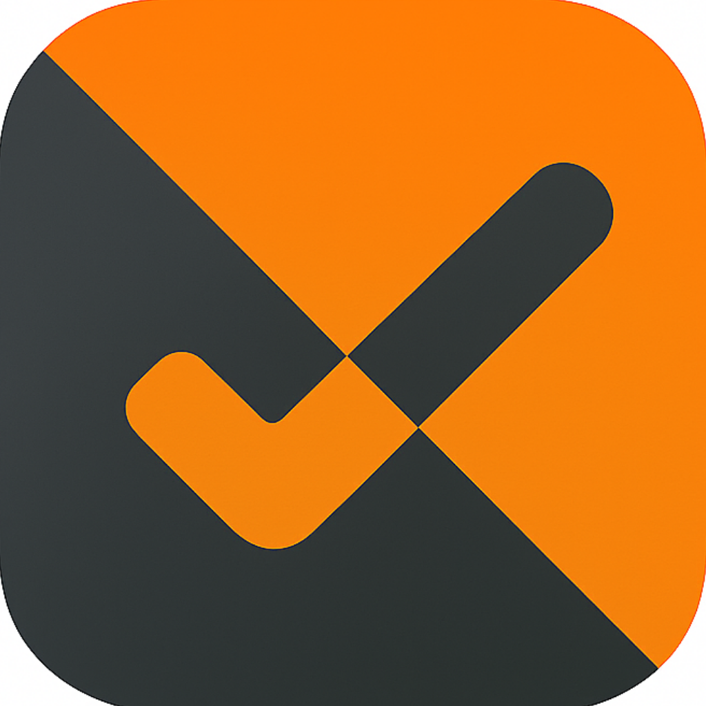

SnapTaskLast updated: November 3, 2026
Effective date: November 3, 2026
Everything you create in SnapTask (tasks, categories, notes, photos, voice memos, journal entries, rewards, statistics and settings) is stored on your device. If you enable iCloud sync, it is also stored in your private iCloud database under your Apple ID, which is managed by Apple. We have no access to that database and cannot read, change or delete it.
Shared Spaces (available from SnapTask 2.0): if you share a space, its content and your iCloud name are shared through iCloud with the people you invite. We do not receive this data either.
If you post a suggestion, reply, vote or like on the Community board, we store on Google Firebase (Cloud Firestore):
Suggestions and replies are public: everyone who uses SnapTask can read them. Please do not include personal information in them.
If you post a suggestion, the App also stores on Firebase your device's Apple push notification token, the App language and platform, and the random identifier above, so we can let you know when we reply. Notifications are shown only if you allow them. The token is used for nothing else.
If you write to us, we receive your email address and whatever you include in your message.
We do not collect your location, contacts, advertising identifier, usage analytics or crash reports. If you allowed iOS to share analytics with app developers, Apple may share anonymous crash reports with us; Apple handles them under its own policy.
Some features connect your device directly to other providers. We do not receive this data:
We do not sell data, use it for advertising or share it with data brokers.
Google and Apple may process data outside the European Economic Area, with safeguards such as the EU-U.S. Data Privacy Framework or Standard Contractual Clauses. We may disclose data if the law requires it.
Data sent to Firebase is encrypted in transit and stored on Google's infrastructure. The Community board is public by design, so treat anything you post there as public.
Under the GDPR, and similar laws where they apply (such as the UK GDPR, CCPA/CPRA and LGPD), you can ask to access, correct, delete or export your data, and to object to or restrict its processing. Write to the email above. Since there are no accounts, tell us the title of your suggestions so we can find them. You can also complain to your data protection authority (in Italy: Garante per la protezione dei dati personali, garanteprivacy.it).
SnapTask is not directed to children under 13. Children under the age of digital consent in their country (14 in Italy, up to 16 elsewhere in the EEA) should post on the Community board only with a parent's permission. If you think a child has sent us data, contact us and we will delete it.
iOS asks for your permission before SnapTask uses notifications, calendars, the camera, photos, the microphone or speech recognition. They are used only for the feature you are using, and you can revoke them in Settings at any time.
If our practices change, we will update this policy and the date above, and tell you in the App about important changes.